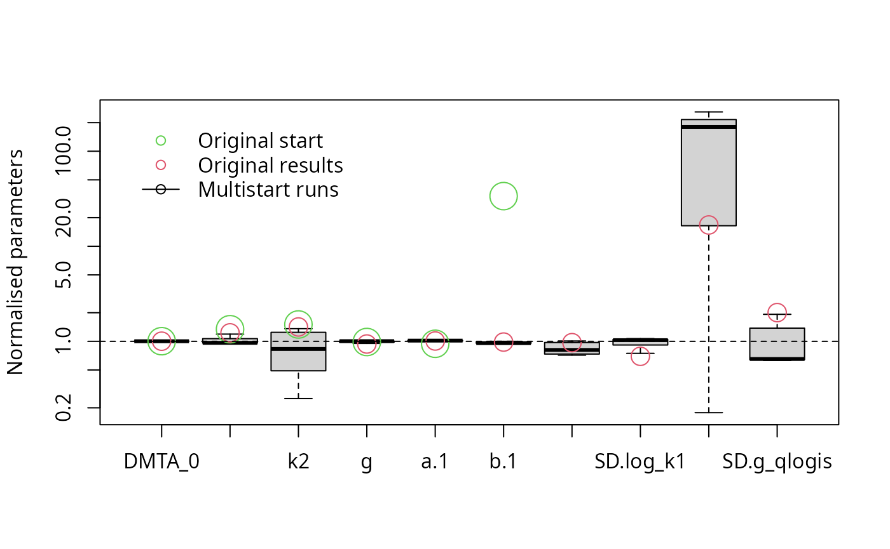
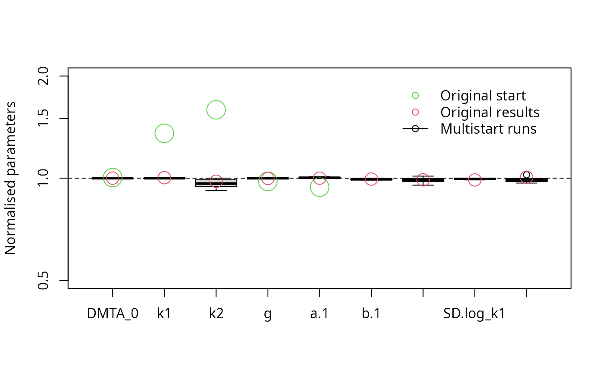

Short demo of the multistart method
Johannes Ranke
Last change 26 September 2022 (rebuilt 2023-04-16)
Source:vignettes/web_only/multistart.rmd
multistart.rmdThe dimethenamid data from 2018 from seven soils is used as example data in this vignette.
library(mkin)
dmta_ds <- lapply(1:7, function(i) {
ds_i <- dimethenamid_2018$ds[[i]]$data
ds_i[ds_i$name == "DMTAP", "name"] <- "DMTA"
ds_i$time <- ds_i$time * dimethenamid_2018$f_time_norm[i]
ds_i
})
names(dmta_ds) <- sapply(dimethenamid_2018$ds, function(ds) ds$title)
dmta_ds[["Elliot"]] <- rbind(dmta_ds[["Elliot 1"]], dmta_ds[["Elliot 2"]])
dmta_ds[["Elliot 1"]] <- dmta_ds[["Elliot 2"]] <- NULLFirst, we check the DFOP model with the two-component error model and random effects for all degradation parameters.
f_mmkin <- mmkin("DFOP", dmta_ds, error_model = "tc", cores = 7, quiet = TRUE)
f_saem_full <- saem(f_mmkin)
illparms(f_saem_full)## [1] "sd(log_k2)"We see that not all variability parameters are identifiable. The
illparms function tells us that the confidence interval for
the standard deviation of ‘log_k2’ includes zero. We check this
assessment using multiple runs with different starting values.
f_saem_full_multi <- multistart(f_saem_full, n = 16, cores = 16)
parplot(f_saem_full_multi)
This confirms that the variance of k2 is the most problematic parameter, so we reduce the parameter distribution model by removing the intersoil variability for k2.
f_saem_reduced <- update(f_saem_full, no_random_effect = "log_k2")
illparms(f_saem_reduced)
f_saem_reduced_multi <- multistart(f_saem_reduced, n = 16, cores = 16)
parplot(f_saem_reduced_multi, lpos = "topright")
The results confirm that all remaining parameters can be determined with sufficient certainty.
We can also analyse the log-likelihoods obtained in the multiple runs:
llhist(f_saem_reduced_multi)
The parameter histograms can be further improved by excluding the result with the low likelihood.

We can use the anova method to compare the models,
including a likelihood ratio test if the models are nested.
## Data: 155 observations of 1 variable(s) grouped in 6 datasets
##
## npar AIC BIC Lik Chisq Df Pr(>Chisq)
## best(f_saem_reduced_multi) 9 663.69 661.82 -322.85
## f_saem_full 10 669.77 667.69 -324.89 0 1 1While AIC and BIC are lower for the reduced model, the likelihood ratio test does not indicate a significant difference between the fits.